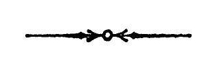

२०८ श्री तन्त्रालोके ।
एतदेव प्रथमार्धेनोपसंहरति
इत्येष दर्शितोऽस्माभि-
स्तत्त्वाध्वा विस्तरादथ ।
विस्तरादिति, पूर्वाह्निकेहि संक्षेपेण षड्रिं-
शद्धा एतदुक्तम्, इह तु प्रतितत्त्वं पाञ्चदश्या-
दिक्रमेणान्यथेति भावः । अथेत्यन्ते मङ्गलार्थ-
मिति शिवम् ॥
कौमारिलनैयायिकमत-
विमतिसतत्त्वविज्जयरथाख्यः ।
अख्यापयदतिविशदां
दशमाह्निके विवृतिरीतिमिमाम् ॥
इति श्रीतम्रा लोकविवेके तत्त्वभेदप्रकाशनं
नाम दशममाह्निकम् ॥

श्रीमत्प्रतापभूभर्तुराज्ञया प्रीतये सताम् ।
मधुसूदनकौलेन सम्पाद्येदं प्रकाशितम् ॥
१ क० पु० विततीति पाठः ।